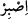
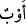

2- Gerçekten hoşnut olmak
3- İlahî hükmü gönül hoşnutluğuyla kabul etmek.”
(Rûzbihân) el-Baklî de der ki: “Peygamber Efendimiz’in gönlü, üzerine Hak
nurlarının devamlı gelişinden ötürü yağmurlardan ve hattâ Arş ve Kürsî’nin nurundan
bile daha inceydi. Onun inkârcıların sözlerine ve müstehzîlerin alaylarına tahammül
edememesi, Allah’ın ma’rifet celâlinin eksiksiz oluşundandır; yoksa Hz. Peygamber’in
(s.a.) ubûdiyyet makamında sabırsız biri olmasından değil.
Ve “kulumuz” Yehûdâ b. Ya’kub torunlarından İşâ oğlu “Dâvûd’u, o kuvvet sâhibi
zâtı” kalbî bir hatırlayışla “hatırla.” Dâvûd ile Mûsâ (a.s.) arasında beş yüz altmış
dokuz (569) sene olup Dâvûd, Mûsâ’nın şerîatına göre hükmetmiş ve yüz yaşında vefat
etmiştir.
() kalıbındaki () ifâdesi, güç kuvvet sâhibi oldu, anlamındadır. el-
Kâmûs’ta bildirildiğine göre, ( ), “güç” demektir. el-Müfredât’ta ise “müthiş güç”
), “güç” demektir. el-Müfredât’ta ise “müthiş güç”
anlamına geldiği kaydedilir. Mânâsı şudur: Dînî hususlarda güçlü, dinin yüklediği
vazifelerin ve getirdiği zorlukların üstesinden gelen Dâvûd’u yâd et.
el-Kevâşî’de der ki: Buradaki güçten hem dini hem de bedeni gücün kasdedilmiş
olması da mümkündür.
Bil ki Allah Teâlâ Dâvûd’un, önce dînî hususlardaki gücünden; sonra ezelî hüküm
(kazâ) gereği ayaklarının sürçmesinden ve daha sonra da önceki ilâhî inayet gereği
yaptığı tevbeden bahsediyor. Peygamberimiz’e (s.a.) de Dâvûd’un tâat hususundaki
durumunu ve gücünü hatırlamasını emrediyor ki böylece o da güçlü bir şekilde
sabredebilsin ve onun gibi ayakları sürçerek istikametten ayrılmasın. Böylece iki fiil
arasındaki münâsebet kurulmuş ve () “hatırla” fiilinin () “sabret” fiiline niçin
atfedildiği de îzah edilmiş oluyor.
“O, hep Allah’a yönelirdi.”
(), dönmek, yönelmek anlamındaki ()’den gelir. Demek oluyor ki, o, Allah’a ve
O’nun rızâsına çokça rücû ederdi. Yâni Allah’ın hoşlanmadığı şeylerden hoşlandığı
şeylere döner ve yönelirdi. Bu ifâde, Dâvûd’un niçin güçlü olduğunu açıklamaktadır.
Bu, aynı zamanda buradaki güç ile kasdedilenin, bedenî güç olmayıp dînî konular ve
ibâdetle ilgili güç olduğuna dâir bir delildir. Zira Dâvûd’un Allah’ın rızâsına yönelen
biri olması, onun güçlü bir bedene sâhip olmasını gerektirmez. Nitekim Dâvûd’un diğer
peygamberler gibi, iri-yarı olmadığı aksine kısa boylu olduğu rivâyet edilir. Bedenî
güçlerin çoğu ise Allah tarafından bedenen ve cismen büyük olanlara verilmektedir.
et-Te’vîlâtü’n-Necmiyye’de der ki: Âyet, Dâvûd’un hem zâhirî hem de bâtınî olarak
ne kadar kemâl sâhibi bir kul olduğuna işâret eder. Zâhirî gücü, attığı üç adet taşla
Calût’u (Galiot) ve birçok askerini öldürmesinden; bâtınî açıdan güçlü oluşu ise
devamlı Allah’a yönelmesinden anlaşılmaktadır. Öyle ki bu yönelişi (evvâbiyyet)
dağlara ve kuşlara da sirâyet etmiş; bunlar da kendisi ile birlikte Allah’a yönelmeye
başlamışlardır.